Private. Personal. Powerful.
Your hormones.
Your health.
Your best life.
Personalised hormones, menopause care and longevity medicine designed around you — so you can feel like yourself again.
Chapter 02
Personalised Solutions. Precision Medicine. Healthy Aging
Evidence-based medicine meets personalised care — from hormone optimisation and functional medicine to peptides and longevity medicine.
✦ Who we are
Chapter 03
Start With a Conversation. Leave With Clarity.
Meet Irina Bond, the founder of Medi-Gyn and Hormone Health Educator. During your complimentary discovery call, she will help you understand your concerns, answer your questions, and help you explore the next step with clarity and confidence.
✦ Clinical layer
01
Hormone Therapy & BHRT
Energy, mood, cycles, libido
01
Hormone Therapy & BHRT
For women whose energy, mood, cycles or libido no longer feel like their own.
02
Menopause Care
Perimenopause, menopause and beyond
02
Menopause Care
Personalised care through perimenopause, menopause and beyond.
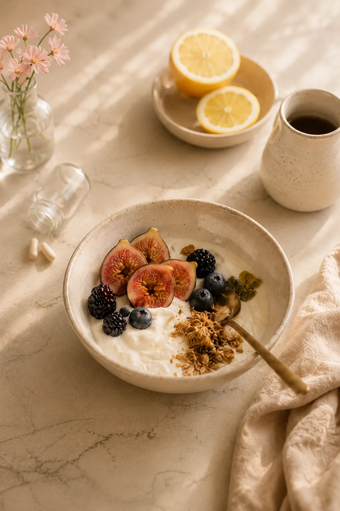
03
Functional Medicine
Root causes, found and treated
03
Functional Medicine
A deeper investigation into metabolism, digestion, thyroid health and inflammation.
04
Peptide & Regenerative Support
Recovery, resilience, vitality
04
Peptide & Regenerative Support
Medically supervised support for recovery, resilience, healthy ageing and vitality.
Chapter 05
Meet The Experts Behind Your Journey.
Behind every personalised journey is a team chosen not only for their expertise, but for their dedication to listening, understanding, and delivering the highest standard of care. Meet the professionals committed to helping you achieve lasting zest for life, vitality and health-span.
✦ The clinic
Chapter 06
Personalised Health Solutions. Tailored to You
Explore our carefully selected hormone and peptide therapies, supplements and biohacking solutions designed to support your body — not overwhelm it.
✦ Supportive tools
Chapter 07 — menoSTART
Educational Events Beyond Borders.
From international educational events to global collaborations and media recognition, Medi-Gyn is helping reshape the future of hormone health — one conversation, one city, and one person at a time.
Join menoSTART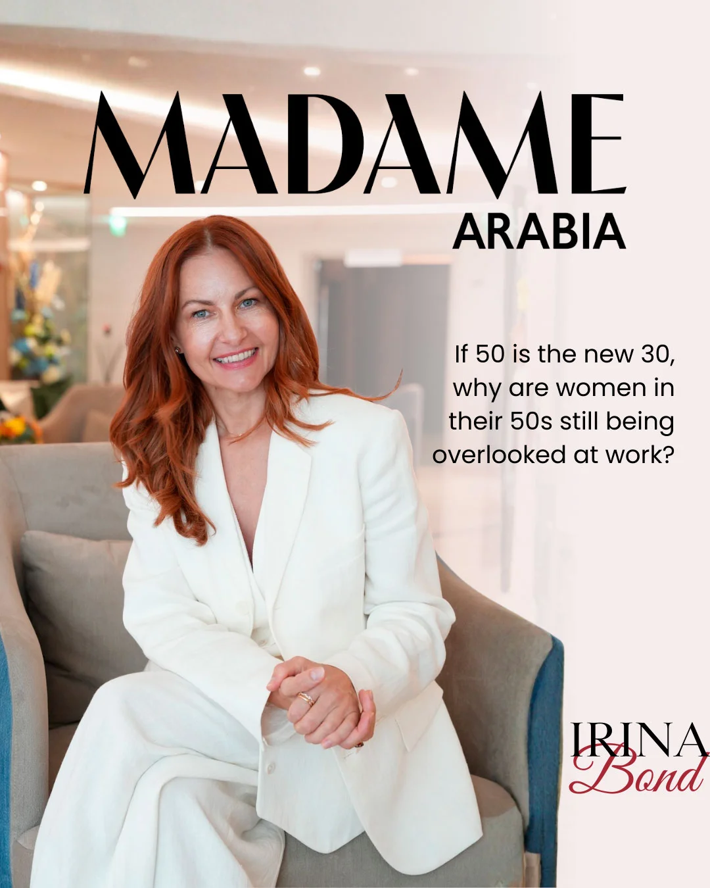
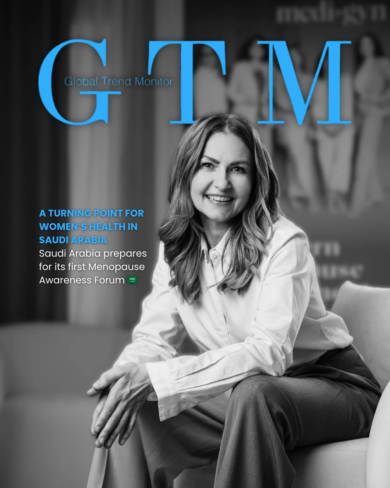
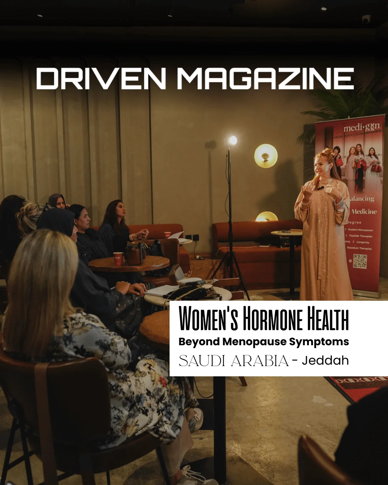
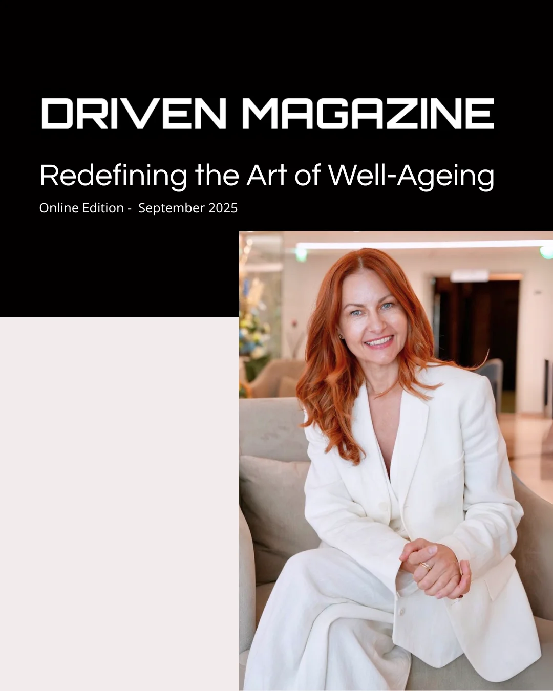
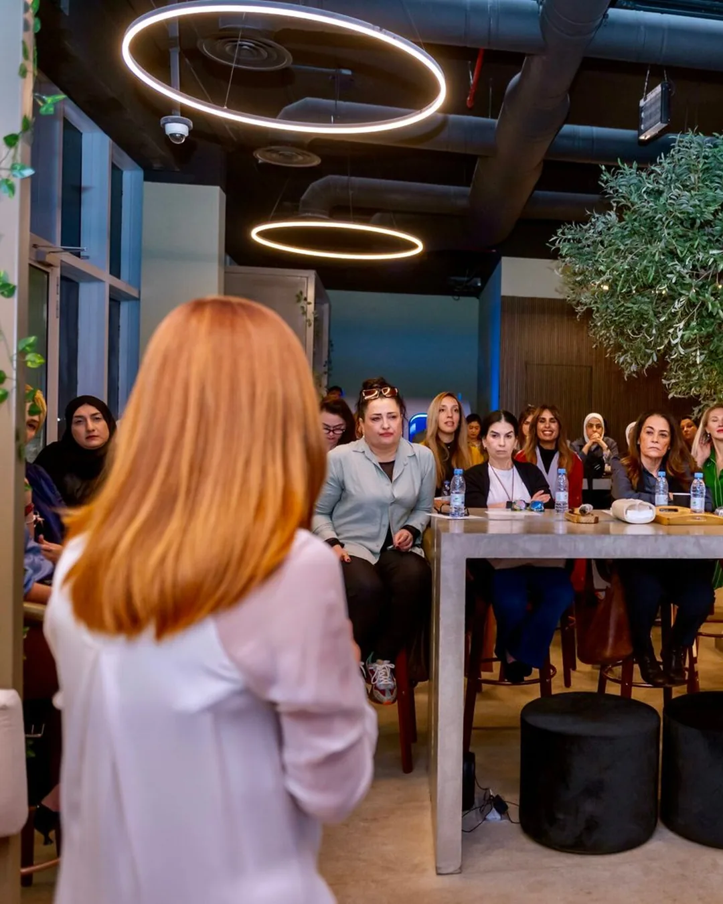
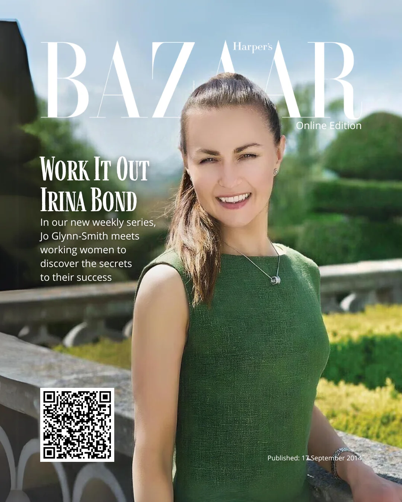
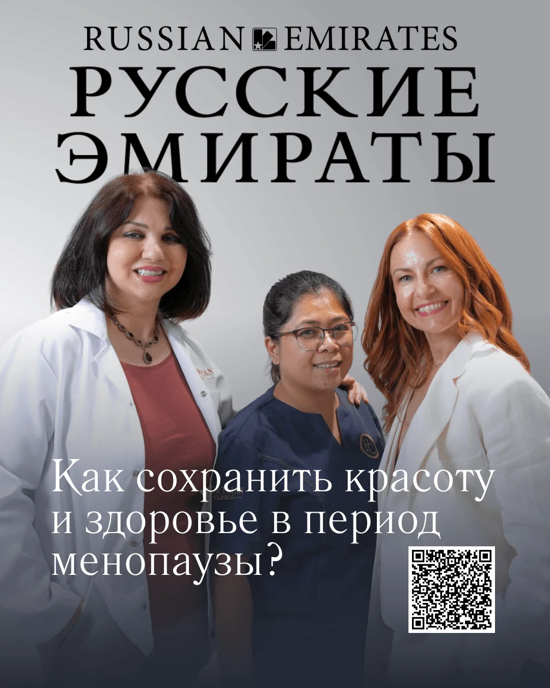
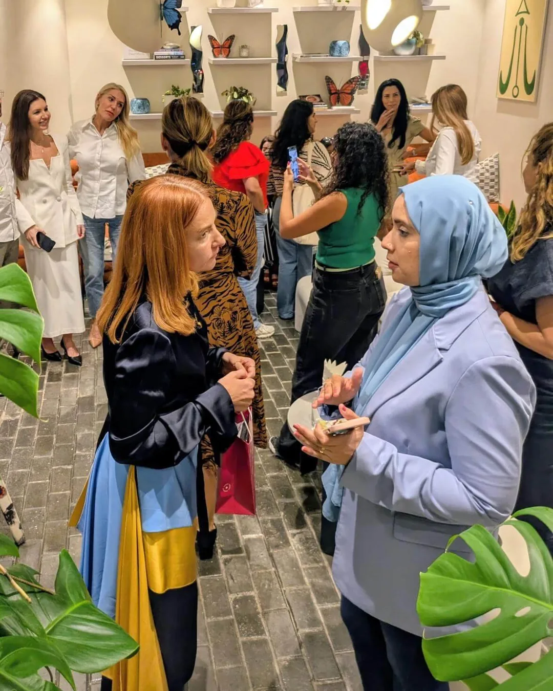
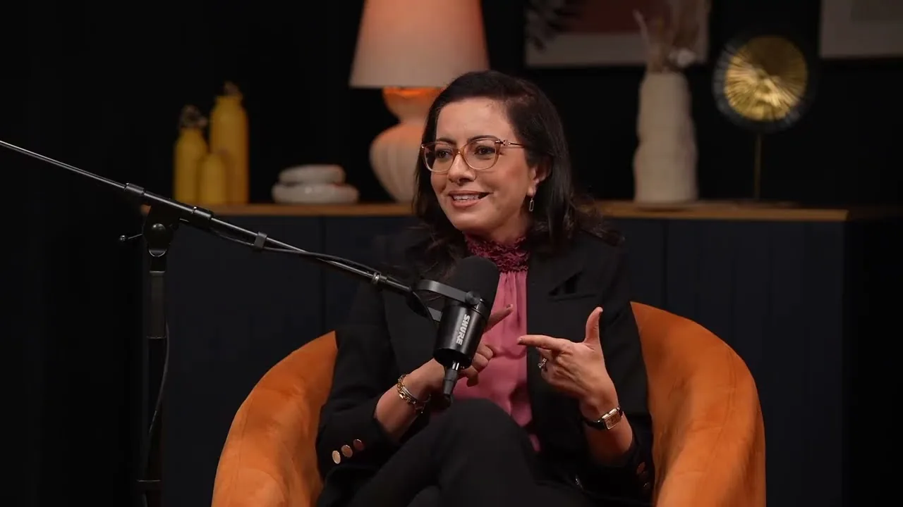
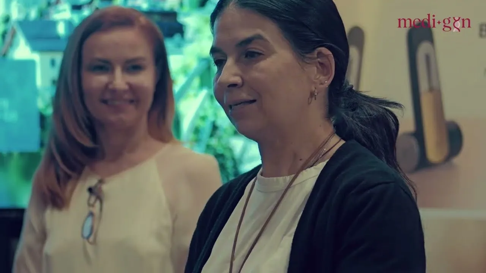
01 / 15
In their words
“This literally elevated my everyday life to another level. It was transformational.”
“I got a golden medal in world championship in AD with my team. All members of the team were 25 years old and I’m 47.”
“I’ve never felt so safe and understood as a woman seeking medical care.”
“The menopause really hit me fast and furious.”
“Many women struggle with their hormones and well-being. I hope you open more branches in Saudi Arabia… we need you here.”
“I just received my test results from my blood draw this morning. They confirm how I feel – Great!”
“If you are hesitant, just do it.”
“I am a new me, the youngest physical and mental version of me!”
“I am so thrilled to start with you and I already feel at peace of mind that someone can help in a professional manner.”